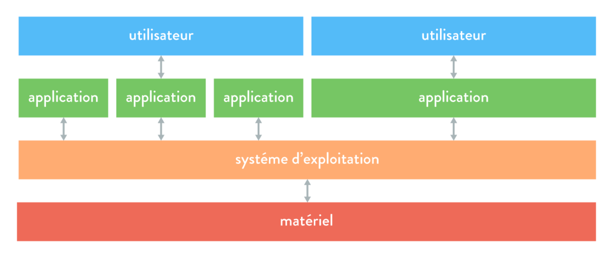
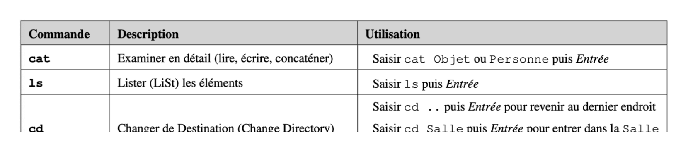
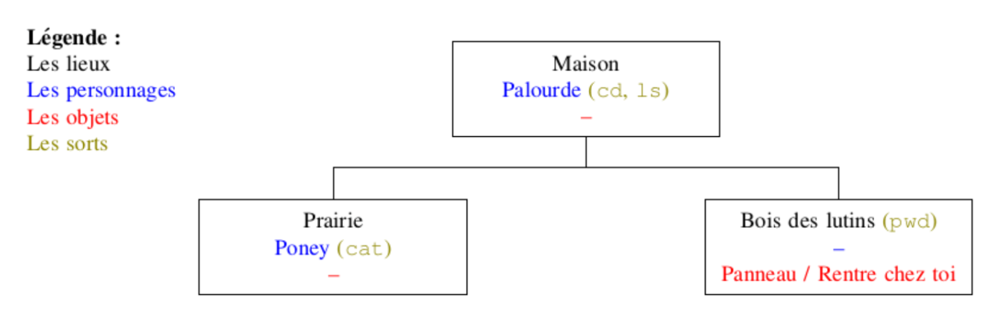
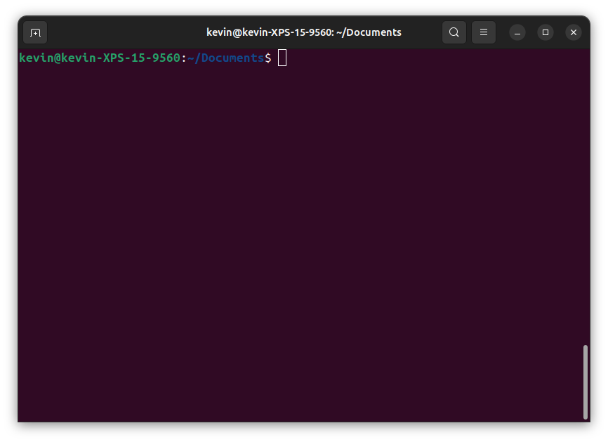
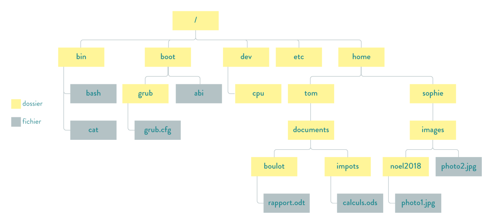
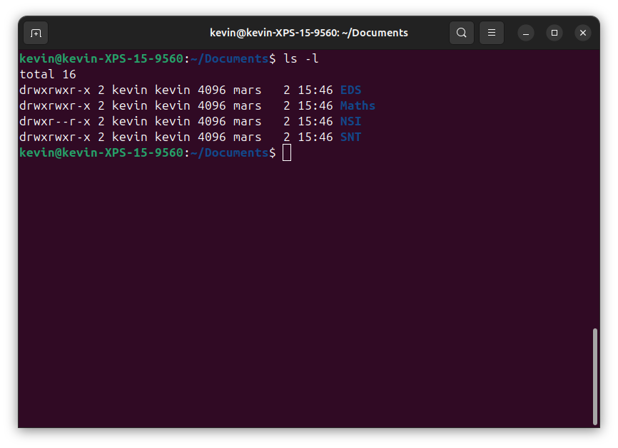
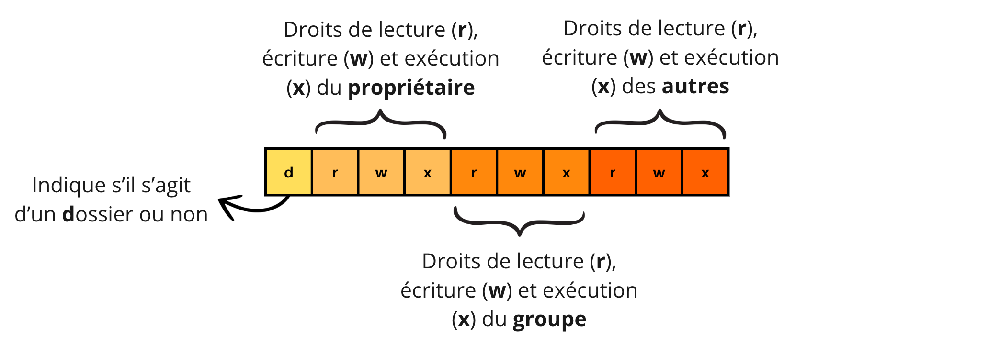
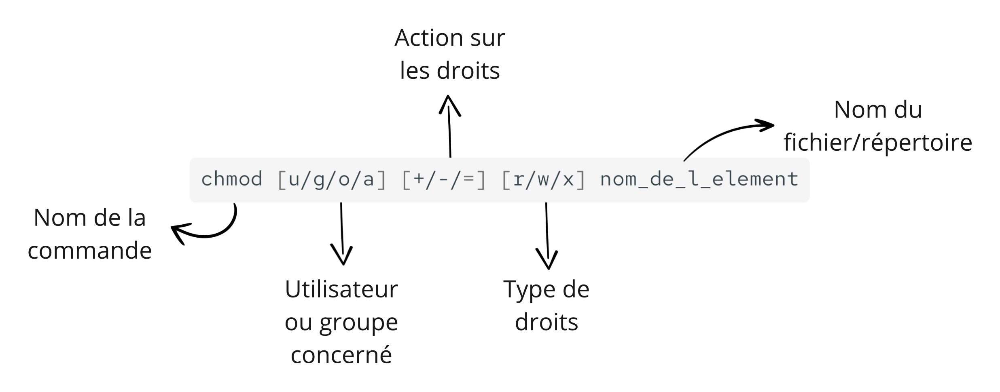

NSI Première · Chapitre 2
L'intermédiaire entre l'utilisateur, les logiciels et le matériel
Introduction
Un ordinateur est constitué de composants matériels 🛠️ qui interagissent avec les logiciels qui y sont exécutés. Pour assurer leur bonne cohabitation et gérer les ressources, un dispositif est nécessaire : c'est le système d'exploitation.
ce qu'est un système d'exploitation à travers ses principales fonctions.
les commandes de base qu'on peut lui transmettre via un terminal.
la gestion des droits d'accès aux fichiers et aux ressources.
🚀 Prêt à plonger dans le monde des systèmes d'exploitation ? Allons-y !
NSI Première · Chapitre 2 — Système d'exploitation
2
1
Une interface entre l'utilisateur et la machine
Partie 1 · Le système d'exploitation
hardware : le processeur, la mémoire vive, le disque, le clavier, l'écran, la carte réseau…
software, aussi appelés applications : un navigateur web, un traitement de texte, un jeu…
L'utilisateur ne peut pas s'adresser directement au matériel : il faudrait un langage de bas niveau, complexe et réservé aux experts. Il passe donc par un logiciel, ou par une interface de commande ⌨️ comme un terminal.
NSI Première · Chapitre 2 — Système d'exploitation
4
Partie 1 · Le système d'exploitation
exécute plusieurs logiciels simultanément pour un utilisateur.
exécute plusieurs applications et sert plusieurs utilisateurs en même temps.
Tous se partagent pourtant les mêmes ressources matérielles : un processeur, une mémoire, un disque…
Il faut donc un programme qui fasse l'intermédiaire entre les logiciels et le matériel, et qui répartisse ces ressources : c'est le système d'exploitation.
NSI Première · Chapitre 2 — Système d'exploitation
5
Partie 1 · Le système d'exploitation
Windows, macOS ou encore Linux sont des systèmes d'exploitation pour ordinateurs fixes et portables. Nous en rencontrerons d'autres dans la suite.
NSI Première · Chapitre 2 — Système d'exploitation
6
Partie 1 · Le système d'exploitation
Les applications ne s'adressent jamais directement au matériel : elles passent toujours par le système d'exploitation.

NSI Première · Chapitre 2 — Système d'exploitation
7
À retenir !
On le désigne souvent par l'abréviation OS, pour Operating System : c'est la traduction anglaise de système d'exploitation, couramment employée, y compris chez les francophones.
Partie 1 · Le système d'exploitation
Pour exécuter plusieurs applications simultanément sans conflit, le système d'exploitation gère l'accès des processus aux ressources matérielles :
il ordonne l'exécution des processus et accorde à chacun un temps d'accès.
il attribue à chaque processus une zone de mémoire pour son code et ses données, puis la libère.
il gère l'accès au clavier, à la souris, à la carte réseau…
NSI Première · Chapitre 2 — Système d'exploitation
9
Partie 1 · Le système d'exploitation
NSI Première · Chapitre 2 — Système d'exploitation
10
À retenir !
… afin de garantir un fonctionnement fluide et sécurisé de l'ordinateur.
Partie 1 · Le système d'exploitation
Avant 1950
Les programmeurs interagissent directement avec le matériel ; programmeur et opérateur ne font qu'un.
Années 60
Ordonnancement des tâches et séparation des rôles programmeurs / opérateurs.
Années 70
On optimise les calculateurs en partageant les ressources entre programmes exécutés simultanément.
Depuis 1980
Essor de la micro-informatique, des réseaux locaux et d'Internet, systèmes hétérogènes reliés.
NSI Première · Chapitre 2 — Système d'exploitation
12
Partie 1 · Le système d'exploitation
NSI Première · Chapitre 2 — Système d'exploitation
13
Partie 1 · Le système d'exploitation
Ordinateurs personnels
| Système | Éditeur |
|---|---|
| Windows | Microsoft |
| macOS | Apple |
| Linux | communauté · surtout pro |
Tablettes et smartphones
| Système | Éditeur |
|---|---|
| Android | |
| iOS / iPadOS | Apple |
NSI Première · Chapitre 2 — Système d'exploitation
14
Partie 1 · Le système d'exploitation
NSI Première · Chapitre 2 — Système d'exploitation
15
Partie 1 · Le système d'exploitation
Tous ces systèmes remplissent les mêmes fonctions, mais certains sont libres tandis que d'autres sont propriétaires.
NSI Première · Chapitre 2 — Système d'exploitation
16
Partie 1 · Le système d'exploitation
Pour comprendre le cas d'Android, il nous faut une dernière notion :
NSI Première · Chapitre 2 — Système d'exploitation
17
Partie 1 · Le système d'exploitation
Linux, et ses variantes (les distributions) comme Debian, Ubuntu ou Zorin OS.
Android : il repose sur le noyau Linux, mais certaines parties du système sont propriétaires.
Windows, macOS, iOS : code source fermé, licences restreintes.
NSI Première · Chapitre 2 — Système d'exploitation
18
Partie 1 · Le système d'exploitation
NSI Première · Chapitre 2 — Système d'exploitation
19
Travaux pratiques
Installer une distribution Linux, Zorin OS, sur un disque dur externe grâce à une clé USB bootable : notre environnement de travail pour toute l'année en NSI.
À vous de jouer
NSI Première · Chapitre 2 — Système d'exploitation
20
Exercices
Page Exercices du site · corrections consultables après validation par l'enseignant.
| Exercice | Support | Niveau | Thème |
|---|---|---|---|
| 1 | 💻 Ordinateur | ★☆☆ | Les distributions Linux les plus populaires |
| 2 | ✏️ Papier | ★★☆ | Logiciel libre : intérêts et risques |
| 3 | ✏️ Papier | ★★☆ | Application, programme et processus |
| 4 | ✏️ Papier | ★★☆ | Exécuter plusieurs programmes « simultanément » |
Exercices
NSI Première · Chapitre 2 — Système d'exploitation
21
Travaux pratiques
Un jeu de rôle dans le terminal : retrouver un fichier à effacer en découvrant, pas à pas, les commandes Linux.
Exemple de tableau

Exemple de carte

À vous de jouer
NSI Première · Chapitre 2 — Système d'exploitation
22
2
Donner des ordres au système d'exploitation en mode texte
Partie 2 · La ligne de commande
Avant que les interfaces graphiques manipulables à la souris 🖱️ ne se généralisent (Mac OS, 1984), on passait par un terminal et des commandes en mode texte. C'est encore essentiel pour :
directement avec le système, sans interface graphique.
un ordinateur en cas de dysfonctionnement.
certaines tâches grâce à des scripts.
📌 Objectif : exécuter des commandes Linux pour mieux comprendre et contrôler le système d'exploitation.
NSI Première · Chapitre 2 — Système d'exploitation
24
Partie 2 · La ligne de commande
NSI Première · Chapitre 2 — Système d'exploitation
25
Partie 2 · La ligne de commande
Raccourci clavier sous Linux :
Ctrl + Alt + T

NSI Première · Chapitre 2 — Système d'exploitation
26
Partie 2 · La ligne de commande
Sous Linux, les fichiers sont organisés en arbre. Chaque fichier et dossier a un emplacement précis et un chemin d'accès unique.
NSI Première · Chapitre 2 — Système d'exploitation
27
Partie 2 · La ligne de commande

NSI Première · Chapitre 2 — Système d'exploitation
28
Partie 2 · La ligne de commande
Il démarre toujours à la racine (/) et décrit tout le trajet jusqu'à l'élément.
Il démarre du répertoire courant : il ne commence pas par /.
NSI Première · Chapitre 2 — Système d'exploitation
29
Partie 2 · La ligne de commande
Pour le fichier rapport.odt, donner son chemin absolu, puis son chemin relatif depuis le dossier tom et depuis le dossier images.
Exemple
NSI Première · Chapitre 2 — Système d'exploitation
30
Partie 2 · La ligne de commande
Énoncé · Chemins de rapport.odt : absolu, depuis tom, depuis images
Chemin absolu
/home/tom/documents/boulot/rapport.odt
Depuis tom
documents/boulot/rapport.odt
Depuis images
../../tom/documents/boulot/rapport.odt
.. remonte à sophie, puis .. à home
Résolution
NSI Première · Chapitre 2 — Système d'exploitation
31
Partie 2 · La ligne de commande
Le répertoire courant est /home/tom/documents. Quelle commande permet d'aller dans le répertoire noel2018 de sophie ?
💭 Deux réponses possibles : avec un chemin absolu, ou avec un chemin relatif.
Exemple
NSI Première · Chapitre 2 — Système d'exploitation
33
Partie 2 · La ligne de commande
Énoncé · Depuis /home/tom/documents, aller dans noel2018
Avec un chemin absolu
cd /home/sophie/images/noel2018
Avec un chemin relatif
cd ../../sophie/images/noel2018
../.. remonte de documents à tom, puis de tom à home.
Résolution
NSI Première · Chapitre 2 — Système d'exploitation
34
Partie 2 · La ligne de commande
| Commande | Signification | Explication | Exemple |
|---|---|---|---|
| mkdir xxx | make directory | Crée un répertoire dans le répertoire courant. | mkdir finances |
| touch xxx | touch | Crée un fichier vide nommé xxx (s'il existe déjà, seule sa date de modification change). | touch notes.txt |
NSI Première · Chapitre 2 — Système d'exploitation
35
Partie 2 · La ligne de commande
| Commande | Signification | Explication | Exemple |
|---|---|---|---|
| cp xxx yyy | copy | Crée une copie du fichier xxx sous le nom yyy. | cp rapport.odt copierapport.odt |
| mv xxx yyy | move | Déplace xxx dans le répertoire yyy. Si yyy n'est pas un répertoire existant, xxx est renommé en yyy. | mv photo2.jpg noel2018 |
| rm xxx | remove | Supprime un fichier ou un répertoire. | rm rapport.odt |
NSI Première · Chapitre 2 — Système d'exploitation
36
Partie 2 · La ligne de commande
Le répertoire courant est /home/tom/documents/boulot. Que fait chacune de ces deux commandes ?
mv rapport.odt ../impots
mv rapport.odt bilan.odt
💭 Le second argument est-il un répertoire existant ?
Exemple
NSI Première · Chapitre 2 — Système d'exploitation
37
Partie 2 · La ligne de commande
Énoncé · mv rapport.odt ../impots · mv rapport.odt bilan.odt
../impots est un répertoire existant (/home/tom/documents/impots) : rapport.odt y est déplacé.
bilan.odt n'est pas un répertoire existant : rapport.odt est renommé en bilan.odt.
Résolution
NSI Première · Chapitre 2 — Système d'exploitation
38
Partie 2 · La ligne de commande
NSI Première · Chapitre 2 — Système d'exploitation
39
Partie 2 · La ligne de commande
Sans changer de répertoire courant, copier rapport.odt (dans /home/tom/documents/boulot) dans le répertoire images de sophie, sous le nom copierapport.odt.
💭 Utiliser des chemins absolus pour la source et pour la destination.
Exemple
NSI Première · Chapitre 2 — Système d'exploitation
40
Partie 2 · La ligne de commande
Énoncé · Copier rapport.odt dans images, sous le nom copierapport.odt
cp /home/tom/documents/boulot/rapport.odt /home/sophie/images/copierapport.odt
le chemin absolu du fichier à copier.
le chemin absolu de la copie, avec son nouveau nom.
Résolution
NSI Première · Chapitre 2 — Système d'exploitation
41
Partie 2 · La ligne de commande
| Commande | Signification | Explication | Exemple |
|---|---|---|---|
| date | date | Affiche la date et l'heure réglées sur l'ordinateur. | date |
| free | memory usage | Résume l'utilisation de la mémoire RAM. | free |
| ping xxx | ping (le bruit d'un sonar) | Vérifie la connectivité avec un équipement réseau via son adresse IP. | ping 192.168.1.1 |
NSI Première · Chapitre 2 — Système d'exploitation
42
Partie 2 · La ligne de commande
NSI Première · Chapitre 2 — Système d'exploitation
43
Exercices
Page Exercices du site · corrections consultables après validation par l'enseignant.
| N° | Niveau | Thème |
|---|---|---|
| 5 | ★☆☆ | Chemins absolus et relatifs |
| 6 | ★☆☆ | Reconstituer une arborescence |
| 7 | ★☆☆ | Se déplacer et lister avec cd et ls |
| 8 💻 | ★★☆ | Créer des répertoires (JSLinux) |
| 9 | ★★☆ | Copier un fichier et se déplacer |
| N° | Niveau | Thème |
|---|---|---|
| 10 💻 | ★★☆ | Réorganiser des fichiers (JSLinux) |
| 11 | ★★★ | Déplacer et supprimer une branche |
| 12 | ★★★ | Le caractère spécial * (glob) |
| 13 | ★★★ | Prévoir l'effet de commandes |
💻 : sur ordinateur · les autres se font sur papier ✏️
Exercices
NSI Première · Chapitre 2 — Système d'exploitation
44
3
Qui a le droit de lire, modifier ou exécuter un fichier ?
Partie 3 · Les droits d'accès
Le système d'exploitation gère les utilisateurs et doit réglementer l'accès aux fichiers pour éviter erreurs et incidents.
Un utilisateur ne doit pas pouvoir modifier ou supprimer les fichiers d'un autre utilisateur.
Il ne doit pas pouvoir supprimer des dossiers du système, sous peine de pannes.
📌 Objectif : comprendre comment Linux gère les droits d'accès et comment les modifier.
NSI Première · Chapitre 2 — Système d'exploitation
46
Partie 3 · Les droits d'accès
NSI Première · Chapitre 2 — Système d'exploitation
47
Partie 3 · Les droits d'accès
Sur des distributions comme Ubuntu ou Zorin OS, on ne se connecte pas directement en root : un utilisateur autorisé fait précéder sa commande de sudo (superuser do) pour l'exécuter avec les droits de root.
sudo chown toto rapport.odt
Son mot de passe lui est alors demandé.
NSI Première · Chapitre 2 — Système d'exploitation
48
Partie 3 · Les droits d'accès
r
read : lire le contenu de l'élément.
w
write : modifier le contenu de l'élément.
x
execute : exécuter l'élément (programme ou script).
Chaque fichier et répertoire est associé à des droits d'accès qui définissent ce que les utilisateurs peuvent en faire.
NSI Première · Chapitre 2 — Système d'exploitation
49
Partie 3 · Les droits d'accès
Pour un répertoire, les trois droits prennent un sens particulier :
| Droit | Sur un fichier | Sur un répertoire |
|---|---|---|
| r | lire son contenu | lister son contenu (ls) |
| w | modifier son contenu | créer, supprimer ou renommer des éléments à l'intérieur |
| x | l'exécuter (programme ou script) | y entrer (cd) et accéder à ce qu'il contient |
NSI Première · Chapitre 2 — Système d'exploitation
50
Partie 3 · Les droits d'accès
u
user : l'utilisateur qui possède l'élément.
g
group : les membres du groupe associé.
o
other : ni propriétaire, ni membre du groupe.
NSI Première · Chapitre 2 — Système d'exploitation
51
Partie 3 · Les droits d'accès
L'option -l de ls donne une réponse plus détaillée, en particulier les droits d'accès.

NSI Première · Chapitre 2 — Système d'exploitation
52
Partie 3 · Les droits d'accès

Un tiret - à la place d'une lettre signifie que le droit n'est pas accordé.
NSI Première · Chapitre 2 — Système d'exploitation
53
Partie 3 · Les droits d'accès
Dans ce résultat de ls -l, quels droits ont le propriétaire, le groupe et les autres sur EDS, Maths et SNT ? Et sur NSI ?
💭 Découper les 10 caractères : le type, puis trois blocs rwx.
Exemple
NSI Première · Chapitre 2 — Système d'exploitation
54
Partie 3 · Les droits d'accès
Énoncé · Les droits de EDS, Maths, SNT et NSI
Résolution
NSI Première · Chapitre 2 — Système d'exploitation
55
Partie 3 · Les droits d'accès
En mode texte, on peut ajouter ou supprimer des droits et changer le propriétaire ou le groupe d'un élément.
| Commande | Signification | Explication | Exemples |
|---|---|---|---|
| chown | change owner | Modifie le propriétaire ou le groupe d'un fichier ou répertoire. | chown toto boulot chown toto:titi boulot |
| chmod | change mode | Modifie les droits d'accès d'un fichier ou répertoire. | chmod g+w boulot chmod o-r doc.pdf |
NSI Première · Chapitre 2 — Système d'exploitation
56
Partie 3 · Les droits d'accès
Changer le propriétaire d'un fichier demande en général les droits de root : on écrira donc souvent sudo chown …
chown nouvel_utilisateur unfichier
chgrp nouveau_groupe unfichier
chown nouvel_utilisateur:nouveau_groupe unfichier
NSI Première · Chapitre 2 — Système d'exploitation
57
Partie 3 · Les droits d'accès
u
user · propriétaire
g
group · groupe
o
other · autres
a
all · tous
+
ajouter le droit
-
supprimer le droit
=
affecter le droit

NSI Première · Chapitre 2 — Système d'exploitation
58
Partie 3 · Les droits d'accès
Écrire la commande qui permet :
1. d'ajouter le droit d'écriture au groupe sur rapport.odt ;
2. d'enlever le droit de lecture aux autres sur photo2.jpg ;
3. d'ajouter écriture et exécution au propriétaire sur calculs.ods, et de les enlever aux autres.
💭 chmod [u/g/o/a] [+/-/=] [r/w/x] nom_de_l_élément
Exemple
NSI Première · Chapitre 2 — Système d'exploitation
59
Partie 3 · Les droits d'accès
Énoncé · Les trois commandes chmod
1. Écriture pour le groupe sur rapport.odt
chmod g+w rapport.odt
2. Plus de lecture pour les autres sur photo2.jpg
chmod o-r photo2.jpg
3. Écriture et exécution : ajoutées au propriétaire, enlevées aux autres
chmod u+wx,o-wx calculs.ods
ou encore
chmod u=rwx,o=r calculs.ods
Résolution
NSI Première · Chapitre 2 — Système d'exploitation
60
Exercices
Page Exercices du site · corrections consultables après validation par l'enseignant.
| Exercice | Support | Niveau | Thème |
|---|---|---|---|
| 14 | ✏️ Papier | ★☆☆ | Commandes permises selon les droits |
| 15 | 💻 Ordinateur | ★☆☆ | Droits d'un répertoire (JSLinux) |
| 16 | ✏️ Papier | ★★☆ | Droits minimaux pour une commande |
| 17 | ✏️ Papier | ★★☆ | Donner des droits avec chmod |
| 18 | ✏️ Papier | ★★☆ | Protéger un fichier et un dossier |
Exercices
NSI Première · Chapitre 2 — Système d'exploitation
61
✓
Ce qu'il faut savoir et savoir faire
Conclusion
Un système d'exploitation est l'intermédiaire entre les applications et les éléments matériels de l'ordinateur. Grâce à lui, plusieurs utilisateurs peuvent se partager des ressources matérielles, mais aussi des fichiers.
Avec les commandes en mode texte, on peut manipuler ces fichiers, mais aussi accorder ou supprimer des droits d'accès : la gestion des données est sécurisée et contrôlée.
NSI Première · Chapitre 2 — Système d'exploitation
63
Conclusion
Identifier les fonctions d'un système d'exploitation.
Connaître différents systèmes d'exploitation, libres ou non.
Déterminer un chemin d'accès relatif ou absolu dans une arborescence.
Utiliser les commandes de base en ligne de commande.
Gérer les droits et permissions d'accès aux fichiers.
NSI Première · Chapitre 2 — Système d'exploitation
64